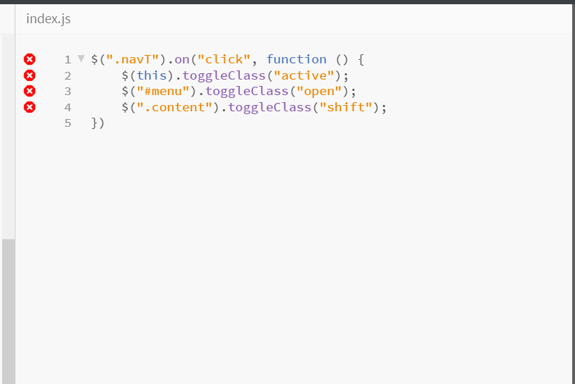
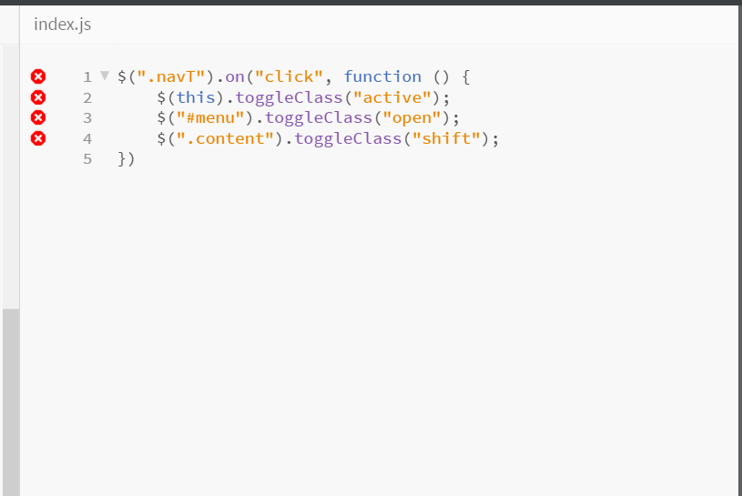

JavaScript
JavaScript is the programming language of HTML and the Web,developed by Netscape Communications Corportion, Mozilla Foundation,Ecma International.It is a multi-paradigm,object oriented,imperative,functional language and mostly considered as high-level interpreted programming language.It is commonly used in making dyamic webpages interactive.
Javascript is only implemented in client-side in web browser.Client-side code run in browser after page is sent back from server often this code manipultes the page or response to user actions.
Sources of JavaScript
- External JavaScript a.k.a Linked
- Embedded a.k.a Internal Embedded does'nt separate the HTML and JavaScript code,it is embedded on the JavaScript file.See example below:
External JavaScript separates HTML and JavaSciprt code that it makes the developer in easier to read and maintai
 


Note:
- The execution of linked scripts can be deferres or run.
- Link scripts can be defer or async
- Async fetch while waitingn for loading and compile ifthe page is available
- Top-level Code execute only as they are encountered.
- Inline ScriptsPut value on the event attribute (e.g,on click)
- <no script> </no script> is an alternative content when browser has no default javascript.
JavaScript Datatypes
The set of data types is the most fundamental characteristics of a programming languages.- Numbers
- Strings

single quoted,double-qouted delimeted

JavaScript Variables
JavaScript uses the var keyword to declare variables and an equal sign is used to assign values to variables.

JavaScript Operators
Uses arithmetic operators ( + - * / ) to compute values:

JavaScript Reserved Words
- abstract else instanceof switch
- boolean enum int synchronized
- break export interface this
- byte extends long throw
- case false native throws
- catch final new transient
Browser Object Model It is a browser-specific convention that talks about all the objects contained by the web browser.
BOM has no standard for implementation.
- Window, Navigator, Screen, Location, History -window.navigator,window.screen
As stated on W3C Recommendation:With the object model, JavaScript gets all the power it needs to create dynamic HTML:
- According to W3C Recommendation, JavaScript can change all the HTML elements in the page
- According to W3C Recommendation,JavaScript can change all the HTML attributes in the page
- According to W3C Recommendation,JavaScript can change all the CSS styles in the page
- According to W3C Recommendation,JavaScript can remove existing HTML elements and attributes
- According to W3C Recommendation,JavaScript can add new HTML elements and attributes
- According to W3C Recommendation,JavaScript can react to all existing HTML events in the page
- According to W3C Recommendation,JavaScript can create new HTML events in the page
Document Object Model As defined on the W3C Recommendation,Document Object Model (DOM) is an application programming interface (API) for valid HTML and well-formed XML documents. It interacts with the document within the script.When a page is loaded,the DOM is created on the page. DOM actually allows to the HTML document from within scripts.